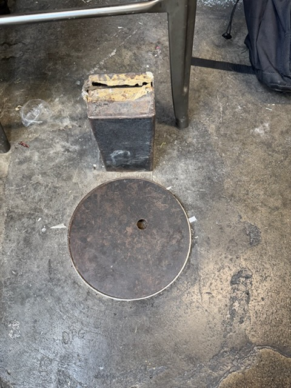
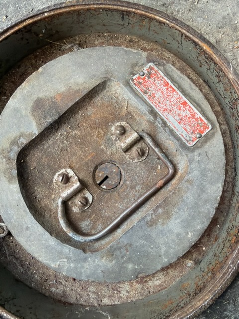
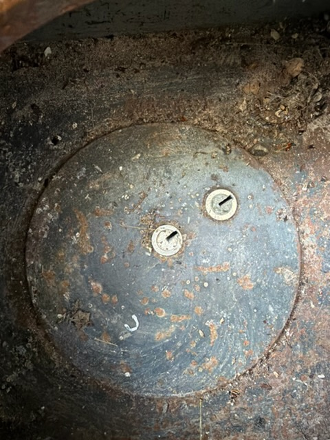
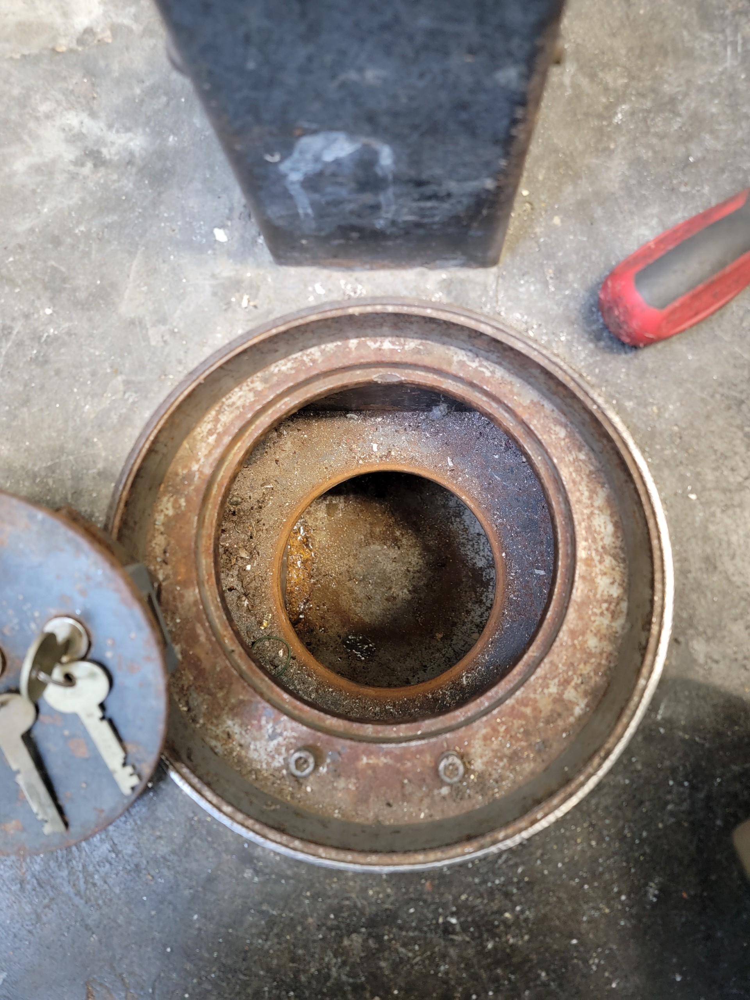
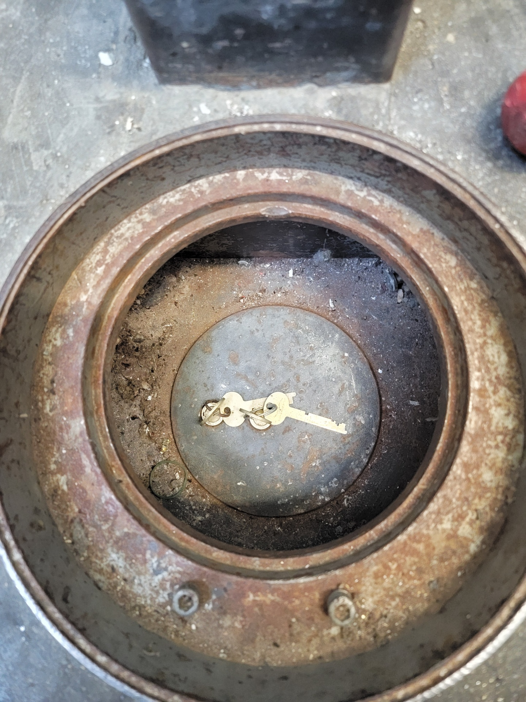
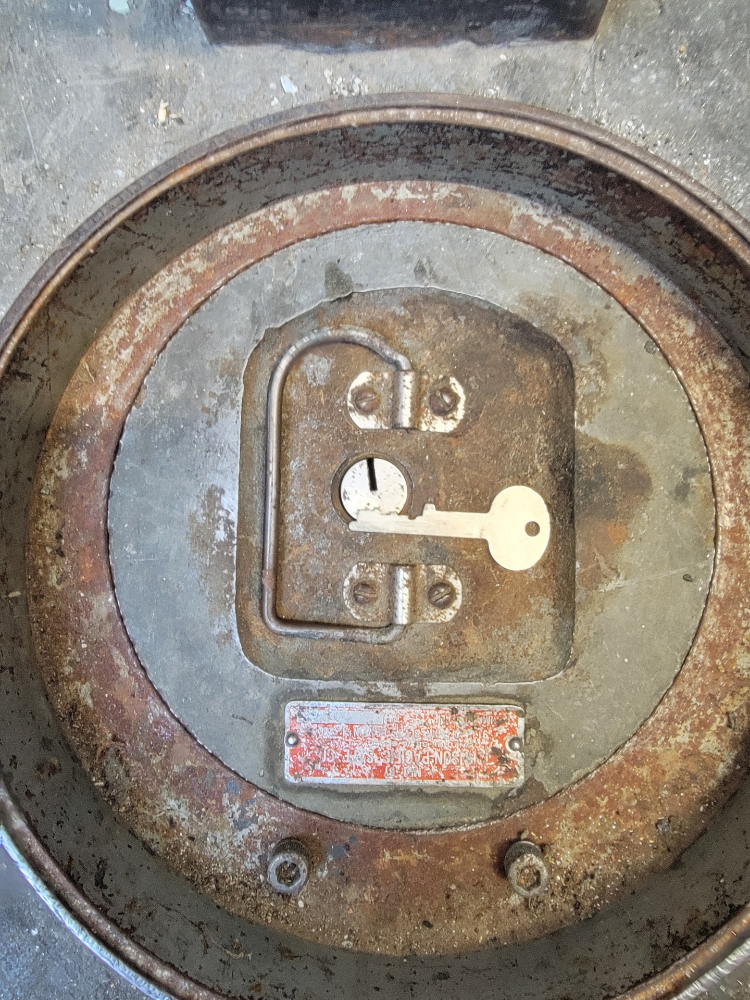
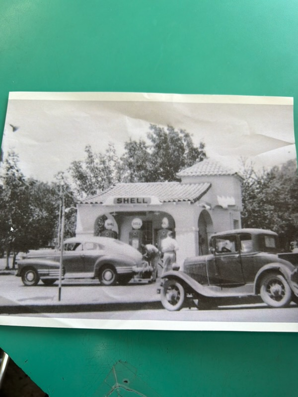

The Johnson Pacific That Almost Nobody Would Touch
I got a call from a fellow out of town — about 90 miles from my shop. He owned an old gas station, the kind that's been there since before highways were paved, and he wanted to keep it as original as possible. Every beam, every fixture, every relic from another era mattered to him.
I brought my protégé along for this one. We had stopped to knock out another job on the way out of Sacramento, then drove the rest of the way to the gas station. From the moment we started on that safe to the moment it was locked, tested, and working — four hours, start to finish. Two old school safe techs, one day, two jobs, and a piece of history saved.
But there was a problem. Set into the concrete floor of that station was a Johnson Pacific floor safe — and nobody could open it.
He'd been calling around for months. Company after company told him the same thing: the only way in was to destroy it. Cut it up. Torch it. Jackhammer the concrete. Turn a piece of history into scrap metal.
That wasn't acceptable to him. And frankly, it shouldn't have been. That safe is stout. Johnson Pacific built them right — heavy gauge steel, precision locking mechanisms, designed to keep whatever was inside safe through decades and disasters. It deserved better than a cutting torch.
Then he ran into one of my customers at the right place, right time. They gave him my number. He called, and I told him the same thing I tell every customer with an antique safe: "I'll open it without destroying it."
The Scene
When I arrived, the safe was exactly as he'd described — a Johnson Pacific floor safe, set flush in the concrete, covered with its original lid. You could feel the history walking in. This wasn't just a job; it was a preservation project.

The Johnson Pacific floor safe as I found it — cover on, embedded in the concrete floor of the historic gas station.
Getting Inside
With the cover removed, the real work began. Johnson Pacific engineered these safes with multiple layers of security. The outer safe head featured a high-security keylock — a robust design built to keep honest people honest and slow down anyone else. This wasn't a cheap safe. This was built for serious protection.

Cover removed, exposing the outer safe head with a high security keylock.
And it didn't stop there. Below the outer compartment, there was a second, lower compartment — an inner safe-within-a-safe — secured by a dual custody keylock that required two different keys, held by two different people, to open. This is the kind of setup you'd see in banks and government facilities, not a gas station floor. It told me this station had once been trusted with more than just gasoline money.

The lower inner compartment with a dual custody keylock — two keys, two people, one safe.
After careful manipulation and precision work — no torches, no grinders, no damage — both compartments were successfully opened non-destructively.

Both compartments open and accessible. Upper and lower sections, fully intact.
The Restoration
Opening a safe is only half the job. The true craft is in putting it back the way it was meant to be. I repaired the inner compartment dual custody keylock, restoring it to full working order.

Inner compartment dual custody keylock after full repair — restored and operational.
Then the outer safe head: locked, tested, and confirmed working exactly as it did the day Johnson Pacific shipped it out of the factory however many decades ago.

Outer safe head after repair — locked, tested, and working exactly as originally designed.
More Than a Safe
This job wasn't just about opening a lockbox. It was about preserving a piece of history. That gas station is a landmark in a historic neighborhood, and every original element that stays — including that floor safe — keeps the story of that building alive.

The historic gas station itself — a landmark property in an old neighborhood.
The owner was relieved. Months of searching, months of being told "it's impossible" — and we got it done without destroying a single piece of history. That's what 40+ years of safe experience looks like.
I finished the opening and repair on site, working alongside my protégé — we handled those locks and keys together — but I ran out of the correct key blanks before I could finish cutting duplicates. I searched every locksmith shop I could find in the area — no luck. So I drove the 90 miles back to Sacramento to get what I needed. I'll be heading back next week to deliver the keys and close it out properly. That's just how I work: old school service, whether it's an old safe or a new one, anytime and anywhere within reason.
He's not alone out there either. In the smaller farming communities across Northern California, there are a lot of folks with old safes and old locks who have fewer and fewer people to call. The old schoolers like me are disappearing — the craft is fading. That's why I trained a protégé, and I'm proud to say he was right there with me on this job, learning and working side by side. He learned the right way — manipulation, non-destructive opening, precision repair. No shortcuts. No torches unless there's no other way. The trade lives on through him, and that matters to me as much as any safe I've ever opened.
Have an Antique Safe That Needs Opening?
Whether it's a Johnson Pacific, a Mosler, a Herring-Hall-Marvin, or something nobody can identify — I'll open it without destroying it.
📞 (916) 534-4900